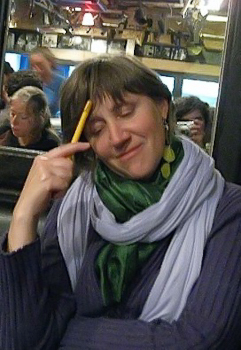
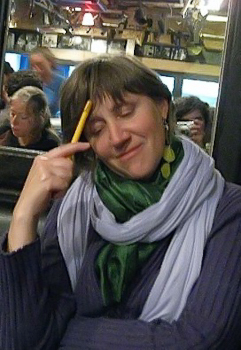

Der Aktuelle Stand
Update October 15th: Hillary ist zu schwach um nochmal nach Hause zu kommen. Sie hat zwar keine Schmerzen, aber fühlt sich auch nicht wohl -- sie kann kaum essen, hat Schwierigkeiten mit dem Atmen und findet keine Bequeme Position. Sie hat daher um palliative Sedierung gebeten. Sie schläft jetzt viel, aber ist genug bei Bewusstsein um sich ab und zu mit uns zu unterhalten. Heute haben wir sogar zu dritt -- Sophie, Hillary und Ich (Paul) -- ein Familien-Pizza-Essen gehabt. Trotzdem gehen wir nicht davon aus, dass sie aus dem Krankenhaus noch entlassen wird, und erwarten nicht, dass sie noch lange mit uns ist. Trotz all dem hat Hillary viel Interesse an die Welt. Sie freut sich sehr über die kommenden Lesungen in NYC und in Wien.
Sandra Huber hat eine Go-Fund-Me Seite für Hillary eingerichtet, um Geld spenden einfacher zu machen. Die Seite ist in Absprache mit Sophie und mir: https://www.gofundme.com/f/help-hillary-keel-and-family. Alle Erlöse gehen an Sophie's amerikanisches Konto. Danke an alle, die uns bereits mit ihrer Spende finanziell unterstützen. Wenn Sophie und ich Zeit dafür finden, werden wir hier auch publizieren, was uns alles schon geschickt wurde.
Hillary hat Krebs. Laut allen Ärzten, mit denen wir gesprochen haben, gibt es keinen Weg zur Heilung. Hillary ist körperlich schwach, aber mental fit. Die Situation ist schwer, aber sie hat die Unterstützung ihrer unmittelbaren Familie. Momentan (6.10.2022) ist Hillary in der Caritas Klinik Sankt Theresia, in Saarbrücken. Wenn alles gut geht, kommt sie in den kommenden Tagen zu Paul nach Hause.
Wie kann man Helfen?
Schickt Hillary eure besten Wünsche, Gebete, Gedanken, Liebe. Ihr könnt sie am schnellsten per WhatsApp kontaktieren. Auch Sophie und Paul freuen sich über Nachrichten. Wenn wir nicht antworten, bitte versteht, dass die Situation überwältigend ist, und wir vieles nicht schaffen.
Es ist für uns alle aber wertvoll zu spüren, dass wir nicht alleine sind.
Man kann auch Postkarten an Pauls Adresse in Saarbrücken schicken:
Hillary Strohmeier c/o Paul Strohmeier
Lessingstr. 24
66121 Saarbrücken
Germany
Finanzielle Hilfe
Hillary hat 8 tage in der Intensivstation von Beth Isreal in NYC verbracht und weitere 5 Tage in der Intensivstation von Wayne Memorial Hospital in Honesdale. Wir haben hier noch keine Rechnungen erhalten. Wir haben widersprüchliche Information zum Versichertenstatus von Hillary bekommen.
Es wirkt so, als hätte sie, durch die krankheitsbedingter Arbeitsfreistellung, ihre Krankenversicherung verloren. Da sie jetzt in Deutschland über ihre Österreichischen Pension gesetzlich versichert ist, sind zumindest die weiteren medizinischen Kosten überschaubar.
Hillarys finanzielle Pläne sind dadurch natürlich auch hinfällig. Sie hat eine Hypothek, die sie eigentlich über den Verlauf der nächsten Jahre abbezahlen wollte. Da sie kein Einkommen und keine Ersparnisse hat, ist das jetzt nicht möglich.
Der Gedanke, dass ihre finanzielle Situation uns, ihre Kinder belasten wird, ist für sie unerträglich.
Letztendlich wissen wir auch noch nicht genau, was für Kosten noch auf uns zukommen. Hillary wird, zum Beispiel, Pflege benötigen, wenn sie bei Paul zu Hause ist. Hier werden Paul und Susanne (seine Partnerin) professionelle Unterstützung brauchen, damit die Situation für alle so lebenswert wie möglich ist.
Wir sind daher für alle finanzielle Unterstützung dankbar.
Man kann Hillary via Zelle geld direkt schicken:
hillary[dot]keel[at]gmail.com
Man kann geld an Sophie via PayPal schicken:
sophie[dot]strohmeier[at]gmail.com (bitte die Option "An Freunde und Verwandte" nutzen, um Gebühren zu vermeiden)
Oder direkt per überweisung an ein Deutsches oder US Konto
Bitte kontaktiert paul[dot]strohmeier[at]gmail.com für Konot-details.Checks können an Sophie geschickt werden. Bitte kontaktiert Sophie, sie schickt dann ihre physikalische Adresse in Brooklyn.
Wir werden die Summe, die wir zur Unterstützung bekommen hier publizieren. Wir wollen auch gerne eine Liste von allen, die etwas beisteuern hier Publik machen (lasst bitte wissen, ob ihr in diese Liste aufgenommen werden wollt, und auch, ob ich den Betrag nennen soll).
Feiert Hillary
Es wird in der Tompkins Square Library am October 22nd, 2pm eine Lesung zur Feier von Hillarys Leben geben:„Alles ist verloren, nur nicht das Glück."
“All is lost but happiness.”
«Tout est perdu sauf le bonheur.»